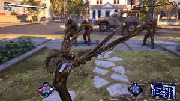
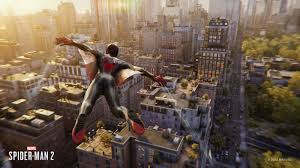

HMarvels Spider-Man 2 es un videojuego de accion y aventura desarrollado por Insomniac Games y publicado por Sony Interactive Entertainment para PlayStation 5. Es la secuela de los exitosos Marvels Spider-Man (2018) y Marvels Spider-Man: Miles Morales (2020), y continua las aventuras de Peter Parker y Miles Morales, quienes deben enfrentarse a nuevos desafios mientras protegen Nueva York de amenazas aun mas peligrosas.
¿De que trata Spider-Man 2?
Spider-Man 2 sigue a Peter Parker y Miles Morales mientras se enfrentan a uno de los villanos mas emblematicos del universo de Spider-Man: Venom, junto con otros enemigos clasicos como Kraven el Cazador. La historia se desarrolla en el mismo universo que los juegos anteriores de Spider-Man y profundiza en la relacion entre Peter y Miles mientras luchan juntos para salvar a Nueva York.
La trama comienza con Peter Parker llevando una vida bastante estable, pero pronto se enfrenta a una serie de nuevos desafios cuando una fuerza oscura, representada por Venom, comienza a amenazar a la ciudad. Mientras tanto, Miles Morales esta ganando experiencia como el nuevo Spider-Man, pero tambien enfrentara dilemas personales mientras combate a estos nuevos villanos.
 